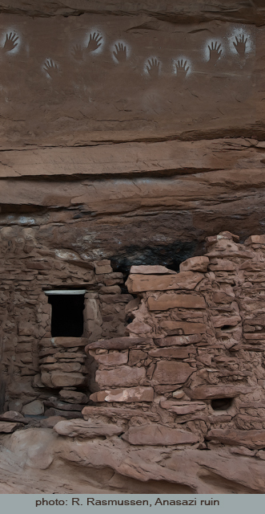

|
Here, in this remote, twisted canyon, countless generations of Anasazi lived. One thousand years ago, they faced a 100-year drought, and lost out to it. It's likely that some farmers became nomads, raiding the produce of others who had struggled on; likely there were skirmishes in which one family battled another for survival.
scattered pot shards
all that remains
of a nameless family
I rest in an alcove's shade near crumbling walls of stone and mud located high on a sandstone cliff. Ghostlike handprints are painted above the doorway. Below is the wash whose intermittent waters fed their small plot. Where corn and squash once grew, there's nothing but cactus.
I listen to the wind whispering, imagine it's them speaking of their failing crops while eating a scant evening meal. I don't know who these tears are for.
a lizard
on the sandy wash
sunset
Notes:
1. This haibun was inspired by and is structured after Basho's passage, "Hiraizumi," in The Narrow Road to the Deep North about the demise of the Fujiwara family. The haiku "scattered pot shards . . ." uses the middle line of the well-known poem associated with the passage: "summer grasses / all that remains / of warrior's dreams," a translation by Lucien Stryk from On Love and Barley: Haiku of Basho, Penguin Classics, London, 1985.
2. Anasazi is the name given by the Navajos to the peoples who preceded them. They died off or scattered in a drought-induced diaspora around the year 1100 AD. The Hopi, Zuni and other present pueblo peoples of the southwest consider the survivors to be their ancestors.
3. A Commentary on "Hiraizumi" by Ray Rasmussen can be found in the December 2011 issue of A Hundred Gourds.
4. The text of Basho's passage "Hiraizumi."
5. The full text of The Narrow Road to the Deep North (trans. by Nobuyuki Yuasa).
|